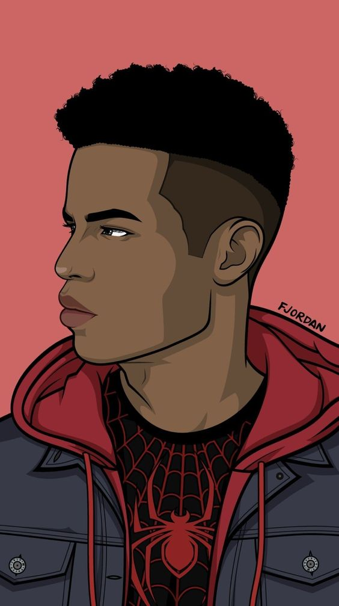
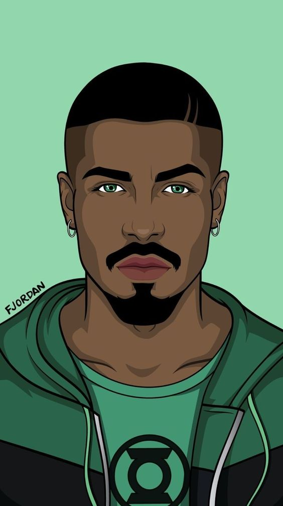
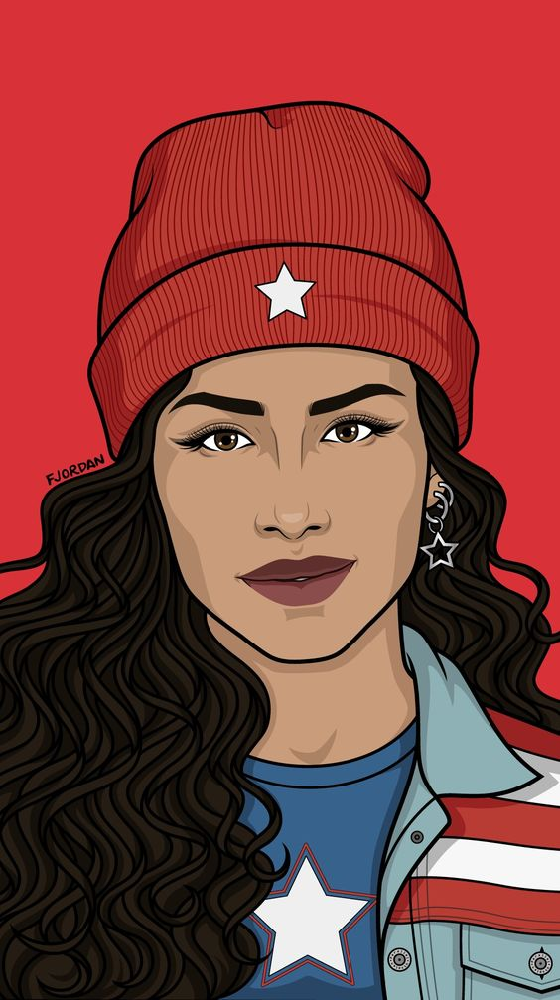

Selecione um personagem
- 
- 
- 
Alex
Alex Thompson dirige um Audi RS3.Ele cresceu nas ruas, desenvolvendo sua paixão por corridas desde cedo. Embora não tenha muitos recursos financeiros, Alex é um dos melhores pilotos da cidade. Ele compete para provar seu talento e conquistar respeito nas corridas de rua.